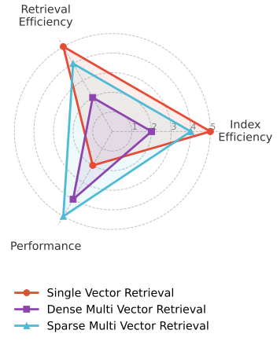
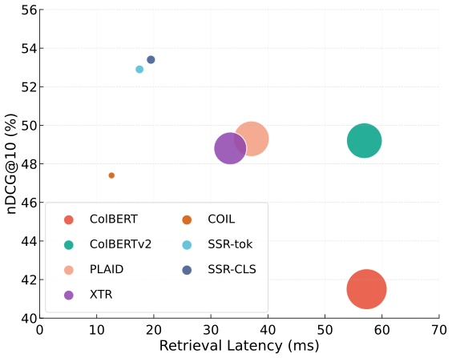
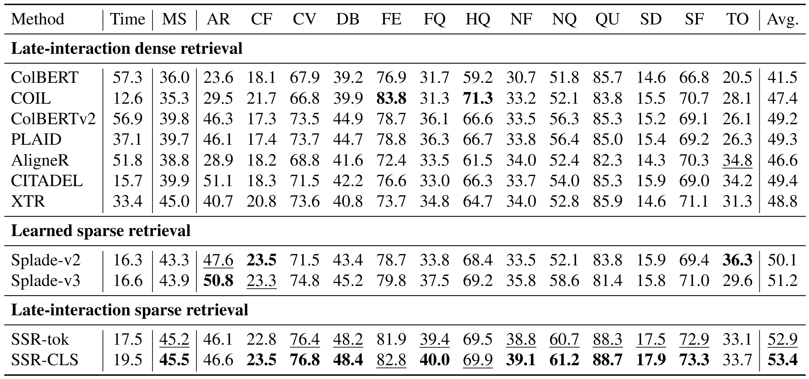
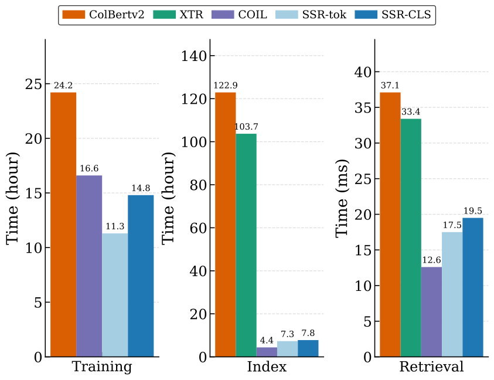
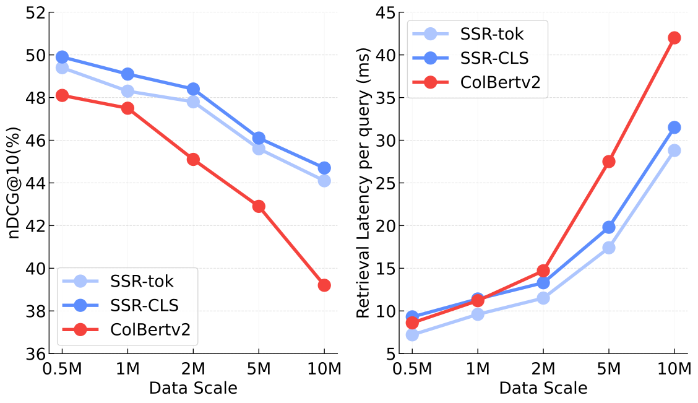
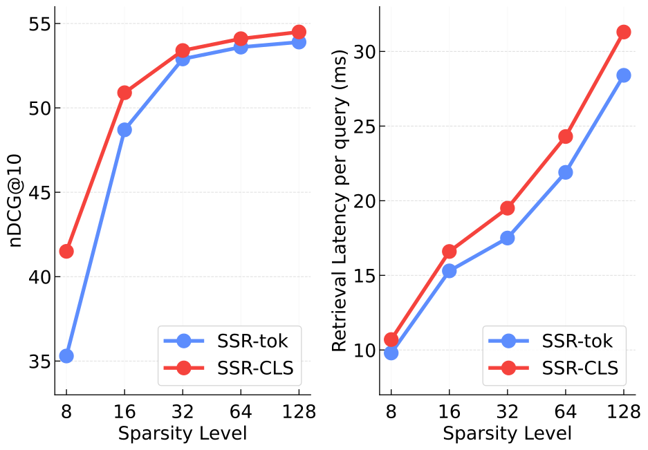
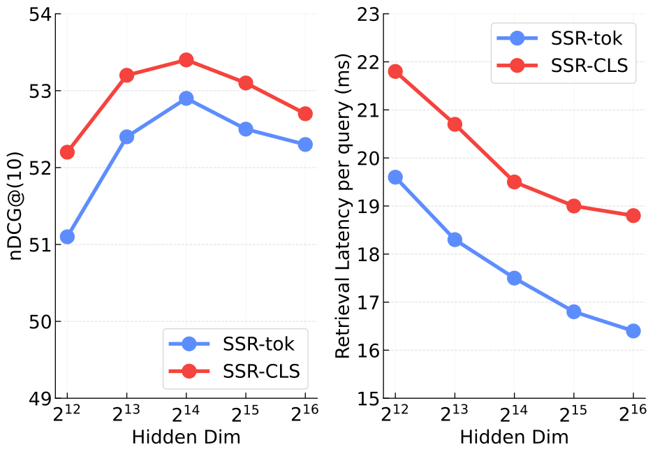

Modern retrieval systems face a persistent trade-off between semantic fidelity and system efficiency. Single-vector retrieval is fast and easy to index, but compresses an entire document into one vector and often loses fine-grained token-level semantics. In contrast, multi-vector retrieval (MVR), represented by ColBERT, preserves token-level interactions through late interaction and achieves strong retrieval accuracy, but this comes with substantial storage, indexing, and retrieval overhead.
Existing efficient MVR systems therefore rely on aggressive approximation pipelines such as vector quantization, residual compression, and large-scale K-means clustering. While these techniques reduce online computation, they introduce two fundamental bottlenecks: semantic information loss caused by dense compression, and expensive offline index construction caused by clustering billions of token embeddings. This motivates a central question:
Can we preserve the fine-grained accuracy of multi-vector retrieval while achieving the simplicity and speed of inverted-index search?
To answer this question, we introduce Single-stage Sparse Retrieval (SSR), a new sparse multi-vector retrieval paradigm that removes the clustering bottleneck entirely. Instead of compressing token embeddings into low-dimensional dense codes, SSR projects them into a high-dimensional but highly sparse space using Sparse Autoencoders (SAEs). Each activated sparse dimension naturally acts as a semantic “pseudo-token,” allowing SSR to build neuron-level inverted lists and compute late-interaction scores only over overlapping activated neurons.


In essence, SSR turns dense token interaction into sparse overlap matching. This enables a single-stage retrieval pipeline: document tokens are inserted into inverted lists according to their activated neurons, and query tokens retrieve candidates by traversing only a small number of corresponding posting lists. To further improve latency, SSR++ adopts a coarse-to-fine sparse pruning strategy, first using the strongest active neurons for fast candidate generation and then refining the final ranking with the full sparse late-interaction score.
Notably, SSR improves the entire retrieval pipeline rather than optimizing only one stage. Across MS MARCO and BEIR, SSR achieves state-of-the-art retrieval performance while nearly halving retrieval latency compared with competitive dense MVR baselines. More importantly, by eliminating K-means from index construction, SSR reduces indexing time by over 15×, making multi-vector retrieval more practical for large-scale and frequently updated corpora. These results show that sparse coding can bridge the gap between the semantic precision of MVR and the operational efficiency of traditional inverted indexing.
We evaluate SSR on MS MARCO and 13 out-of-domain datasets from
BEIR, comparing against representative dense late-interaction retrievers
and learned sparse retrievers.
Retrieval Quality: SSR-CLS achieves the best average score of 53.4, outperforming
the strongest learned sparse baseline Splade-v3 (51.2) and the dense MVR baseline PLAID
(49.3).
Retrieval Latency: SSR-tok reaches 17.5 ms per query, while SSR-CLS reaches
19.5 ms, nearly halving the latency of ColBERTv2 and PLAID while maintaining stronger retrieval quality.

Retrieval performance and latency comparison on MS MARCO and BEIR. MS MARCO is reported by MRR@10, while BEIR datasets are reported by nDCG@10.
Beyond online retrieval, SSR improves the full multi-vector retrieval pipeline by replacing clustering-based indexing
with sparse neuron-level inverted indexing.
Dense MVR systems such as ColBERTv2 and XTR require over 100 hours for index construction due to
expensive K-means clustering and residual-code computation. In contrast, SSR completes indexing in about
7.5 hours, yielding over 15× indexing speedup. Meanwhile, SSR maintains sub-20ms
retrieval latency and scales more gracefully as the corpus grows from 0.5M to 10M documents.

End-to-end efficiency analysis across training, indexing, and retrieval.

Scaling behavior under different corpus sizes.
End-to-end efficiency analysis and scaling behavior under different corpus sizes.
We further analyze how SSR behaves under different sparse representation choices. The hidden dimension controls the
balance between feature disentanglement and support sharing, while the sparsity level K directly controls the
amount of semantic detail retained during sparse late interaction.
Empirically, K = 32 provides a stable sweet spot: smaller values improve latency but may lose fine-grained
token semantics, while larger values bring only marginal quality gains at higher cost. Adaptive query-based sparsity
further improves the Pareto frontier, matching fixed K = 64 performance (53.0 vs. 53.1) while
reducing latency from 19.9 ms to 16.3 ms.

Effect of sparsity level.

Effect of hidden dimension.
Sensitivity analysis on hidden dimension and sparsity level.
@inproceedings{guo26ssr,
title={No More K-means: Single-Stage Sparse Coding for Efficient Multi-Vector Retrieval},
author={Lixuan Guo and Yifei Wang and Tiansheng Wen and Aosong Feng and Stefanie Jegelka and Chenyu You},
year={2026},
booktitle={International Conference on Machine Learning (ICML)},
}